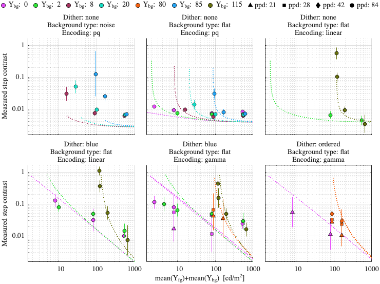
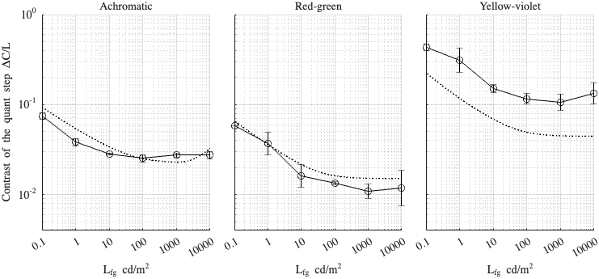

Fitting config: dither, model: mutual_masking_inv_f
Fitting error (RMSE): 2.47854
Model parameters
p.beta = 1.05723; p.beta_cc = 1.00044; p.gs_num = [ 0.464384 0.2 0.965299 ]; p.noise_params = [ 0.235957 0.476873 0.46254 ]; p.dither_mask_params = [ 0.00276025 0.9782 0.956387 ]; p.blue_dither_params = [ 26.3535 88.7395 2.29303 2.87759 ];
Dataset: [ar2025]
Scaling factor: 0.332909

Dataset: [kim2020]
Scaling factor: 1.03025
